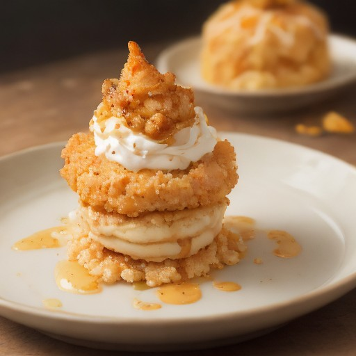

デザート
悪魔的甘辛唐揚げマヨネーズパフェ

サクサク唐揚げの甘辛味を、まろやかでクリーミーなマヨネーズで包み込んだ、悪魔的デザート！カリカリの食感と甘辛い味が絶妙なハーモニー！
💡 こんな時・こんな人におすすめ！
特別な日や、普段のデザートにもぴったりな一品
📋 必要な材料（ポストイット風）
材料リスト 1
- 鶏むね肉1個
- 小麦粉大さじ3
- 卵1個
材料リスト 2
- 砂糖大さじ2
- 塩小さじ1
- 胡椒小さじ1/2
材料リスト 3
- マヨネーズ大さじ2
- Honey大さじ1
- 生クリーム小さじ2
材料リスト 4
- ココアパウダー小さじ1/2
- パンプキン1個
🍳 作り方ステップ
1
鶏むね肉は一口大に切り、小麦粉、卵、砂糖、塩、胡椒で dredging します。
2
油を熱したフライパンで鶏むね肉を揚げ焼きにします。
3
ボウルにマヨネーズ、Honey、生クリーム、ココアパウダーを混ぜ合わせます。
4
揚げた鶏むね肉を、マヨネーズとHoney のマイルドなソースに包みます。パンプキンを添え、パフェにします。